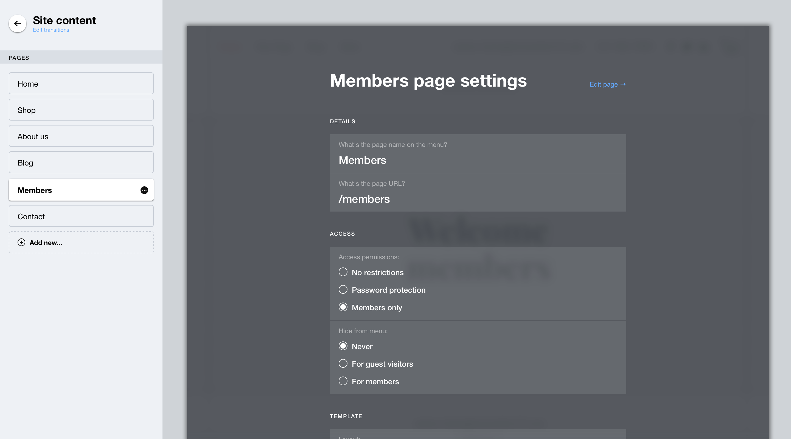
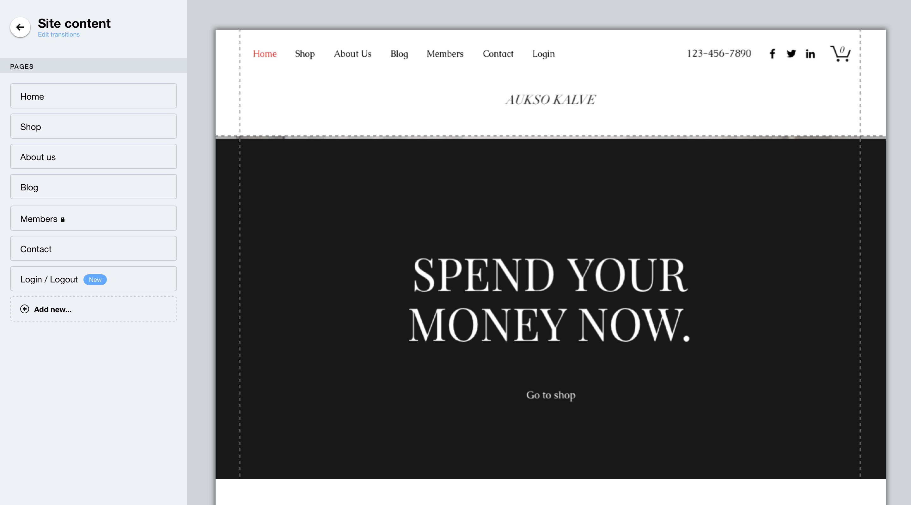
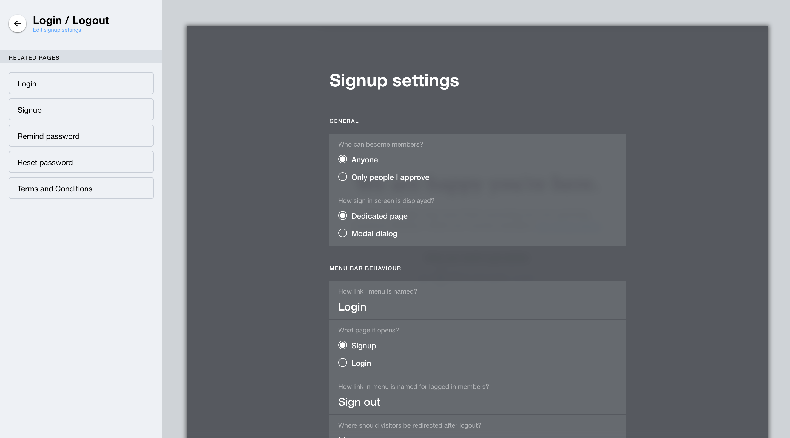
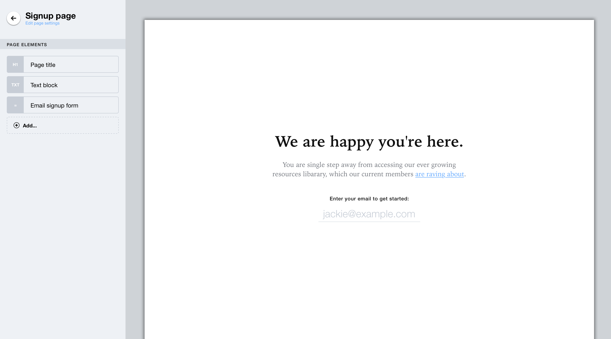
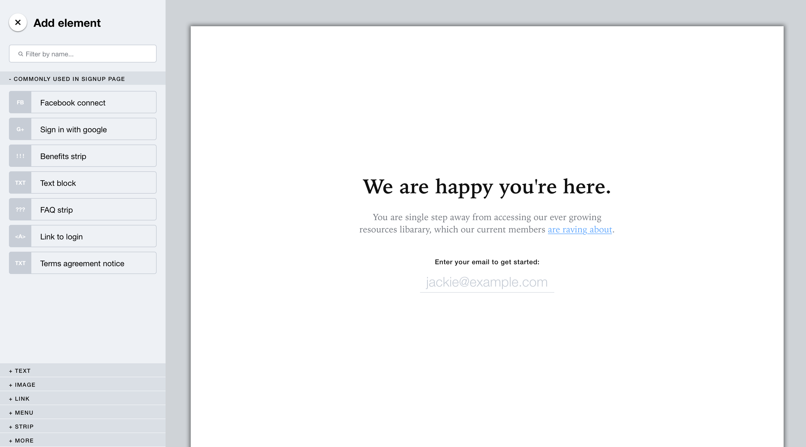
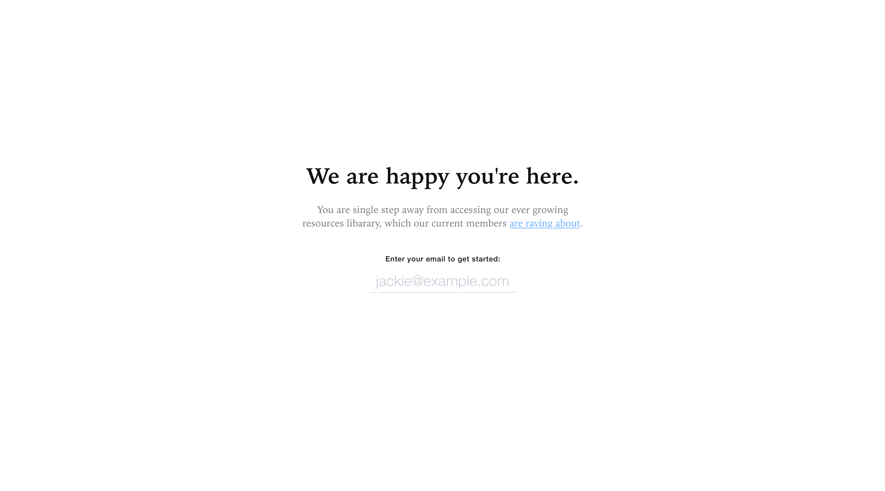

1st step: User starts from pages screen and decides what section he want's to be "members only"
Next

2nd step: Clicking page options menu, user goes to page settings and selects it's permissions
Next

3rd step: User now has access and can link to signup pages just as any other regular page. No need for standalone "signup link" component with hardcoded values and more overhead - just use links as with any other page.
Next

4th step: Tap on the section to customize it's settings and pages. Select the page you want to customize
Next

5th step: Page editor shows content outline ("layers") to give user overview what's in there. Click add to custize.
Next

6th step: We pick from the list of components as in current Wix editor. Main difference - we suggest and guide members and show related components at the top. Also we add filter, to help find quickly instead of browsing infinite lists
Next

7th step: Just like this we have customized our signup page :)
Restart prototype